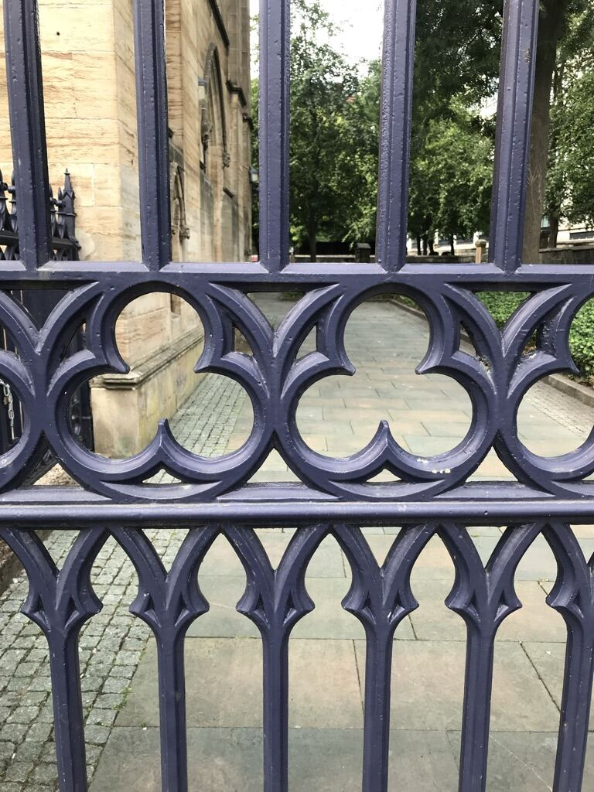
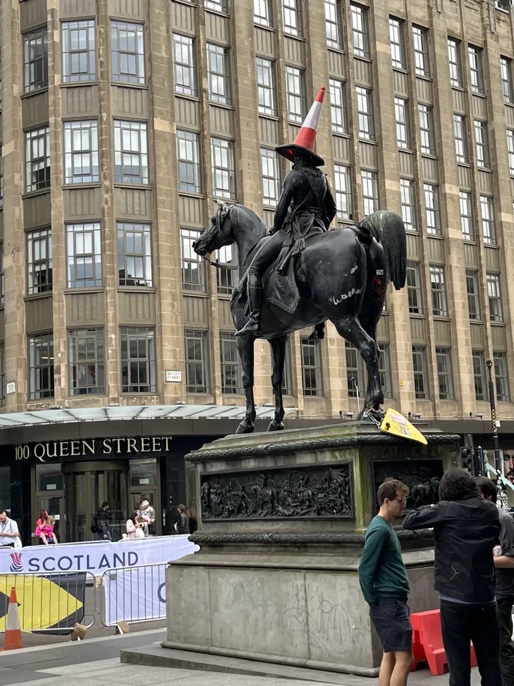
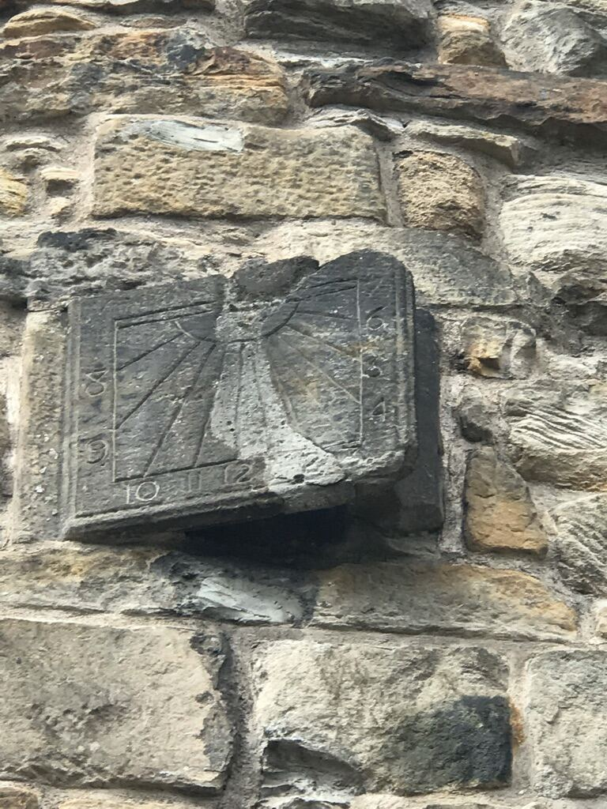
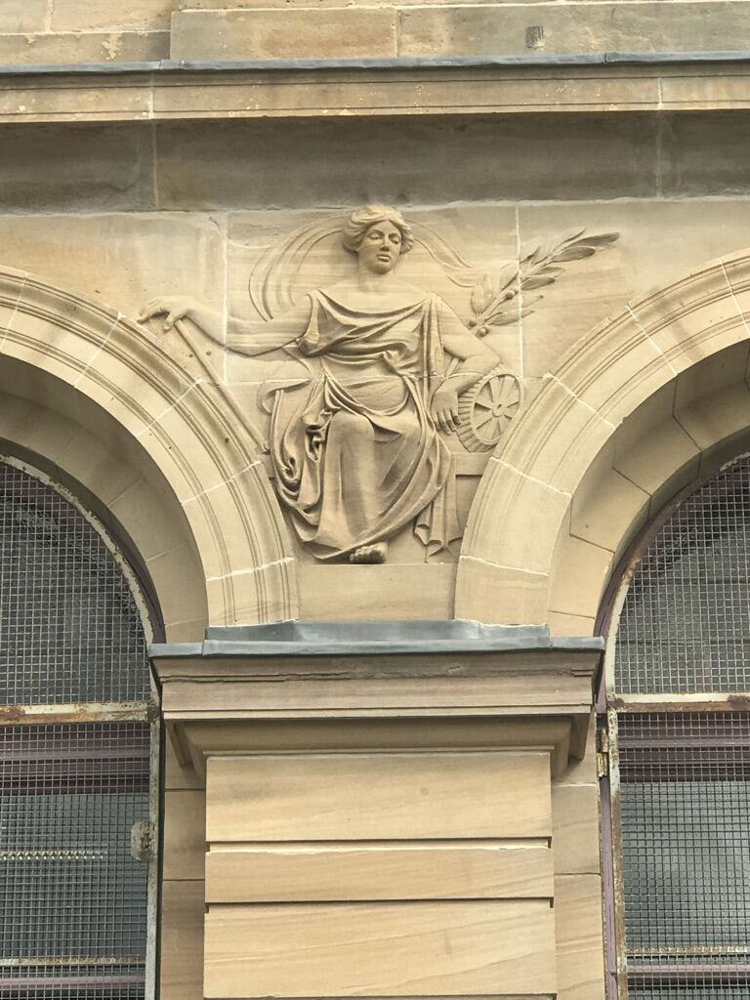

A working archive · est. 2026
Confirmed sites from Frederick Douglass's 1846 lecture tour of Scotland — every location rated by how sure we actually are, sourced back to newspapers, archives, and primary transcripts.
Photographed on location, Merchant City & around, 2026 — not all pictured spots are confirmed Douglass sites; see captions
Photo credit: Marya Errin Jones




Places tied to Douglass's 1846 Scotland tour